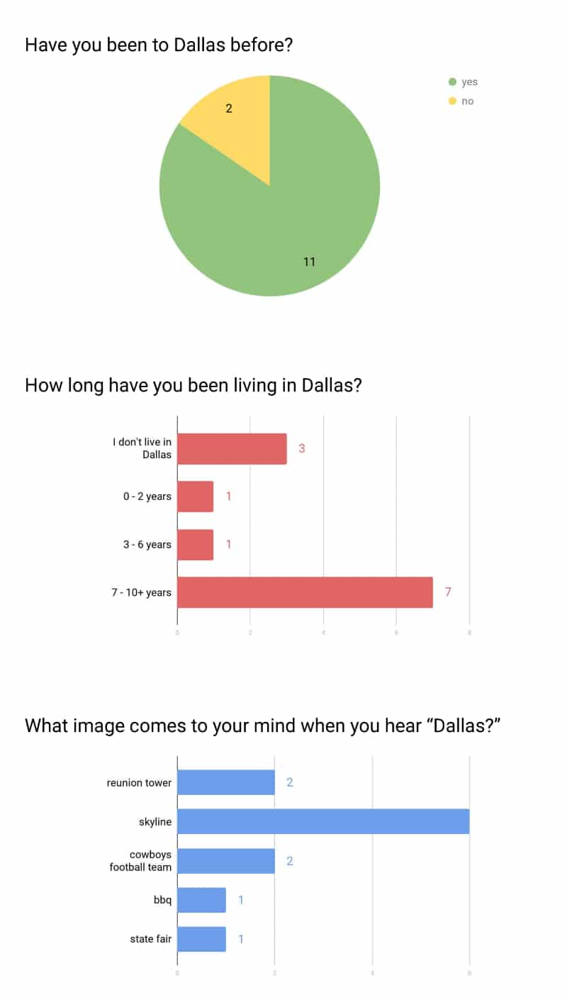
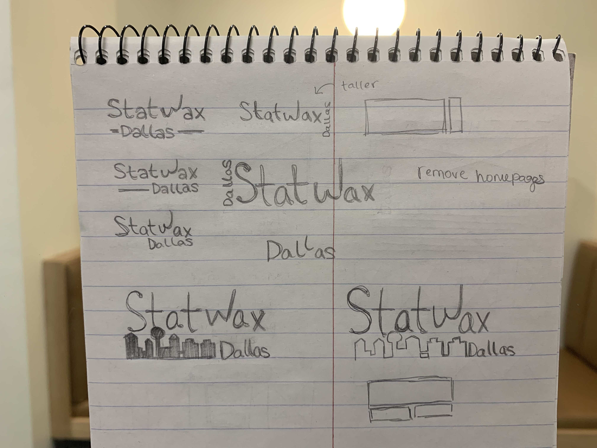
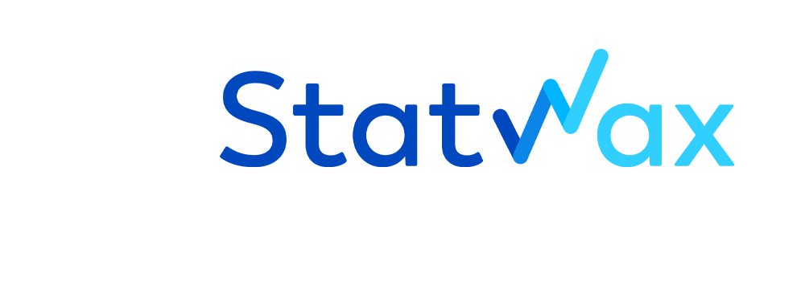
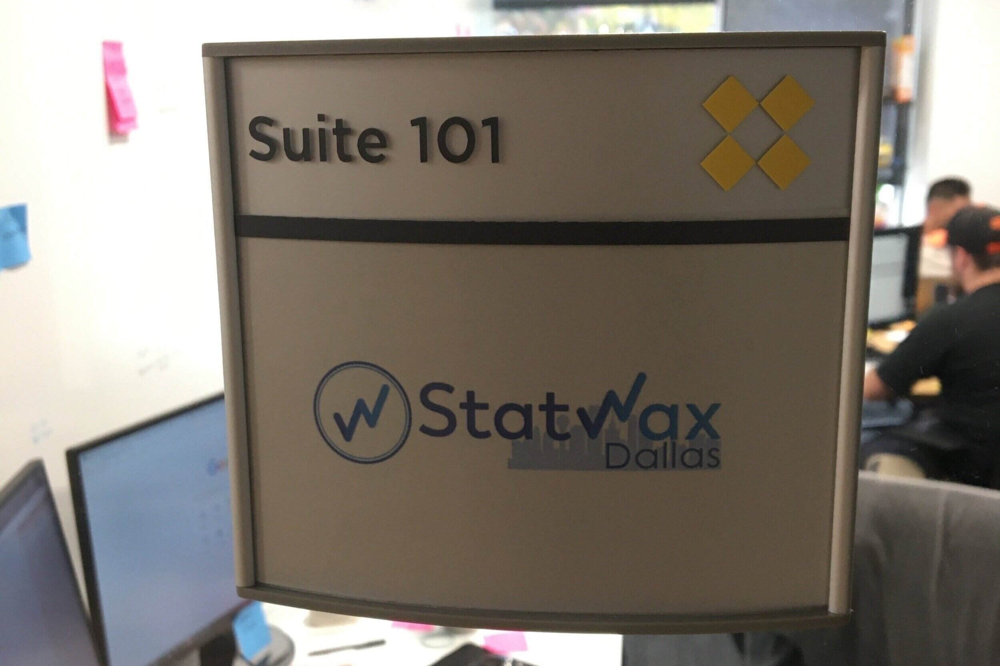

Designing the regional company logo
Headquartered in Fishers, IN, Statwax expanded to Dallas, TX in 2018. Since then, Statwax has grownDuring my internship at Statwax, I created a regional design of the company logo to represent and establish an identity for the Dallas branch.
Create a unique logo with a "touch of yeehaw" for the Dallas regional headquarter while incorporating the original logo.
Graphics Designer
Sept 2019 - Nov 2019
Concepting, Sketching, Desiging, Surveying
Adobe Illustrator, Adobe Photoshop
My first task was to come up with what made Dallas unique before I started doing the first few designs. Was it the food? The people? The landmarks? I created a survey to find out what locals and non-locals thought. The goal of this survey was to determine what came to mind when people thought of the city Dallas, as well as their overall background.
My survey consisted of 3 questions: two multiple choice and one free response. I made this survey short and simple because rather than a making complete overhaul of the original logo, I wanted to append it. Before users began the survey, I made sure to define "Dallas" as the "Dallas–Fort Worth metroplex" area consisting of the surrounding suburbs.
A total of 12 individuals took this survey. Most of them lived in Dallas and/or have visited it before. 8 out of 12 said the Dallas city skyline or the Reunion Tower were the images that came to mind when hearing the word "Dallas." Therefore, I incorporated that into my design.
The survey was only distributed to my coworkers and Facebook friends at the time. In addition, the data pool is quite small. Therefore, there may be a bias limiting the authenticity of my data.
After deciding that the Dallas city skyline was the best representation of native and non-native Dallasites (yep, I didn't believe it either), I created several versions of the design, leaving the logo itself untouched. The first few designs were simple additions that included “Dallas” as part of the name. I chose sans serif fonts to match the original design of the logo.
During my digital design process, I looked through a variety of images of the Dallas skyline on Google. I picked a design I liked best, making sure to keep the notable Reunion Tower in the mix. I used a different shade of blue for each iteration to test out what they'd look like and to keep the identity of Statwax. These were some of the designs I came up with.
As I was creating the logo, two of the Digital Designers and another coworker in our company did some quick iterations of their own. Unfortunately, their designs cannot be shared at this time because I do not have permission to do so. However, the logos either incorporated a cut out star in the "D" of Dallas, had "Dallas" only at the bottom like mine, or a couple of stars surrounding "Dallas."
I then surveyed six people within one of our company Slack channels to determine which logo design looked the best suited for our division. Four of the individuals liked the skyline in the bottom right corner with "Dallas" in front of it. In addition, two of the members liked the circle W that was in one of our designer's iterations. The idea was passed around the same six people, and they all agreed that it would be a nice touch. Therefore, I opted to incorporate it. Following the results, I asked the second Digital Designer in our company to provide high-quality vectorized images to me in order to make the final design.
This is the result of the compromized logo between the second Digital Designer and me. It includes the skyline, "Dallas," and the The Executive Vice President had the last word in choosing the color of the skyline when I showed her the colors that I intended to use. It incorporates the original Statwax logo along with a touch of Dallas as intended.
Overall, this project was a pleasant learning experience for me, as it was my first logo design project for a company. I was able to work alongside my coworkers and get opinions from them and people outside of the company. If I were to do this project again, I would have done the designs in Adobe Illustrator instead of Adobe Photoshop to make it fully vectorized. I should have also focused on solidifying the design first then go in with the colors rather than playing around the colors while I was creating different variations of it. Nonetheless, this is my design on the entrance to our office. As of March 2020, we have moved to a new office location.
